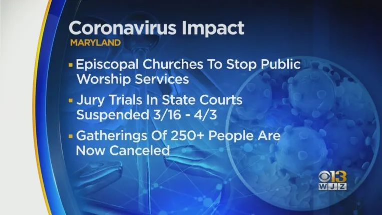
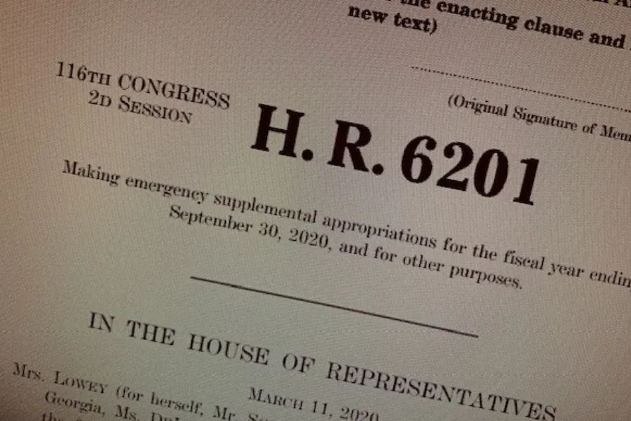

美国“三剑客”救国悬念
原文链接 备份链接 当人类生存的主题被病毒、大流行病裹挟时，在白宫坐镇的特朗普、民间看好的疾病专家安东尼·福西和美联储主席鲍威尔纷纷出招，是老旧的套路还是定海神针，还未可知 文 |《财经》特派记者 金焱 发自华盛顿 编辑 | 苏琦 3 …
在社交疏远的两端，我和格林的差异，不会因为政府的举措和社会的救助而消失。但当这场疫情把两个原本毫不相干的人划在了同一命运共同体内，或多或少，我们有了共担风险的交集。如此，应相互守望、共克时艰。
文 | 薛 敏
社交疏远（”social distancing”），当下已成为渗透美国社会的高频词; 从媒体宣传到政府公告，从企业的应对举措到民众的日常生活，耳熟能详、无人不晓。部分美国人开始习惯好友见面隔空拥抱，生意场上暂停握手示好。我一个美国同事跟我打趣说，可以试试中国的拱手礼。“云办公”、“云健身”、“云社交”不可避免地就在拐角处了，尤其在纽约这样的大城市。从上周开始，自西雅图至纽约，天主教、基督教、犹太教教堂，以及清真寺陆续停止礼拜等仪式和活动。我的基督徒朋友告诉我，他们通过Zoom视频会议软件，开始了“云查经”、“云祈祷”。

上周日（3月15日），如今除了总统以外，出境率最高的公众人物 - 美国联邦政府首席传染病专家、美国国家过敏和传染病研究所(National Institute of Allergy and Infectious Diseases at the National Institutes of Health) 所长安东尼·福奇（Anthony Fauci）在接受美国有线电视新闻网（CNN）访谈节目“国情咨文”（”State of the Union”）的采访时，呼吁民众极大限度减少社交活动，并表示不排除全国范围内，限制甚至关闭餐馆和酒吧的可能性 – 不惜一切代价延缓病毒的传播。福奇坦诚、敢说，是美国公共卫生领域近四十年的绝对权威（”an expert who has been a fixture of American public health for nearly four decades” – 《华尔街日报》）。很多在美华人亲切地称他为“福南山”。就在几天前，他曾语惊四座，说NBA要赛便对着空无一人的观众席比赛。不久后，NBA宣告本赛季暂停。紧随其后，美国大学篮球锦标赛中止；迪士尼、百老汇以及纽约主要的现场脱口秀，也相继画上休止符。体育和娱乐的戛然而止，伴随美国人的业余生活进入休眠。

如同“努力” 、“沉默”，“缺乏领导力”是美国社会给华人贴上的刻板标签，“自由”和“散漫”大多时候是我们对美国人的偏见。然而，偏见即使多是无凭无据，也有中标的时候。就在上周日，纽约市议会议员给纽约州州长安德鲁·库莫（Andrew Cuomo）和纽约市市长比尔·白思豪(Bill de Blasio)施加压力，要求关闭餐馆和酒吧 ， 因为周六的纽约夜生活场所，依然人满为患。截至上周日晚间，纽约市的确诊人数已突破300。曼哈顿的一名议员在他的推特中呼吁：“今天必须是我们力争关闭纽约的日子。”（“Today must be the date we move to #ShutDownNYC.”）
派对结束，明日却难以如常。
从今天开始，我不会有机会在电梯间和同事尬聊“星期一综合征”，因为从本周一开始，大纽约地区的很多公司（包括银行、科技公司、律所等）的员工开始远程办公(work from home)。公立学校也大都关闭，并开始网上授课。在协调工作、协助小朋友网课和控制上房揭瓦的局面之间，很多在美华人家长，尚有很多未知的难题需要攻克。一些上周已提前进入战备状态的家长朋友说，已经出现了电话会议当中，被熊孩子破门而入的状况。

然而，社交疏远，对于我们华人群体中大部分人来说，只是暂时生活上的不便，正常秩序的打扰；而对于美国将近70%的人口，尤其是低收入地区的人，是奢侈。换句话说，避免病毒对自己和家人的侵害，是奢侈。《纽约时报》在3月1日刊登了一篇题为《避免新冠病毒是一些人承受不起的奢侈》（“Avoiding Coronavirus May Be a Luxury Some Workers Can’t Afford”）的文章，其中的一则故事让我看后感触颇深。格林是在纽约一家餐馆工作的单亲妈妈。她没有医疗保险，也没有带薪病假。如果学校关闭，她就无法出去工作。旷工一天，意味着损失100美元的收入；而旷工累计几日，她将面临失业。她对纽约时报说，雇主的期望值是，除非你病得脸色发绿，否则，吞一颗维生素C,坚持下去。而格林只是美国两千七百多万没有医疗保险的人之一。这两千七百万人当中，大多承受不起远程工作、社交疏远的奢侈。
就在上周六，美国众院以363：40 的票数，通过了用以应对新冠病毒、支持美国家庭的法案(H.R. 6201: Families First Coronavirus Response Act)。不出意外，该法案本周将在参院通过，并在总统签字后生效。这个法案，如果通过，在生效后，将提供免费新冠检测、两周的带薪病假、可长达3个月的不带薪病假以及粮食援助等关乎民生的优惠政策。这些优惠，也许对我们很多在美华人来说，并不至关重要；但对于格林这样的单亲妈妈，却会在性命攸关的时刻，雪中送炭。

在过去的一周，我身边的很多华人家长，对于学校何时宣布关闭忧心忡忡；甚至联名向学区请愿，要求关闭学校，以避免病毒社区传播、扩散的危险。而在纽约市，是否关闭公立学校，在上周曾一度成为社会舆论的焦点。就在周日，纽约市长终于宣布，纽约市的公立学校从3月16日起关闭，直至4月20日。对于格林这样的妈妈，学校不仅仅是支持她工作的后盾，更是孩子们可以享受一顿免费热餐的唯一场所。所幸，在接下来的 几周，纽约市的公立学校将继续为需要的孩子提供免费的早餐和午餐；并同时提供网上课程。据估计，纽约市将有3万多学生没有网课所需要的电子设备。而新闻里说，已经有科技公司允诺将为这些孩子们提供需要的电子设备。
《纽约时报》的那篇文章里有这样一句话，极具美国特色：“并非所有人可平等获得健康预防措施；而与此不平等相对应的，是收入、教育和种族的差异。”（“Unequal access to precautionary measures cuts along the same lines that divide the United States in other ways: income, education and race.”）在社交疏远的两端，我和格林的差异，不会因为政府的举措和社会的救助而消失。但当这场疫情把两个原本毫不相干的人划在了同一命运共同体内，或多或少，我们有了共担风险的交集。如此，应相互守望、共克时艰。


· 深度好文 | 特朗普及西方政客们热衷炒作“中国病毒”的真正目的
[](http://mp.weixin.qq.com/s?__biz=MTUzMDQzNjMwMQ==&mid=2652827383&idx=1&sn=5b48c2734b3d38f711e3c35a577f5531&chksm=68ed23555f9aaa431a8b65b1c92e67fbc2cc7c1d789c13c957403d6c493b84c16973646af183&scene=21#wechat_redirect)[· 荣归！上海援鄂医疗队首批英雄回沪，李强亲赴机场迎接](http://mp.weixin.qq.com/s?__biz=MTUzMDQzNjMwMQ==&mid=2652827383&idx=1&sn=5b48c2734b3d38f711e3c35a577f5531&chksm=68ed23555f9aaa431a8b65b1c92e67fbc2cc7c1d789c13c957403d6c493b84c16973646af183&scene=21#wechat_redirect)
新民周刊所有平台稿件， 未经正式授权
一律不得转载、出版、改编或进行
与新民周刊版权相关的其他行为，违者必究


原文链接 备份链接 当人类生存的主题被病毒、大流行病裹挟时，在白宫坐镇的特朗普、民间看好的疾病专家安东尼·福西和美联储主席鲍威尔纷纷出招，是老旧的套路还是定海神针，还未可知 文 |《财经》特派记者 金焱 发自华盛顿 编辑 | 苏琦 3 …
原文链接 备份链接 以下文章来源于我们来补课 ，作者寒潭清 [我们来补课 成人版十万个为什么，重拾你对世界的好奇心](#) 病毒在地球上存在了数十亿年，早已构成生态系统不可或缺的一部分，想彻底消灭病毒比消灭全部虫子更不现实，此次新冠肺炎疫 …
原文链接 备份链接 目前包括中国大陆在内，全球已经有41个国家和地区出现了疫情，其中，韩国是中国大陆之外疫情蔓延最快的国家。 尽管如此，世卫组织不希望在“没有谨慎和清晰地分析事实情况之前”仓促宣布疫情为全球“大流行病” 文 |《财经》特派 …
原文链接 备份链接 昨天想叫在东伦敦住的M和我视频连线、一起在线工作，结果她说，“同学，你得找个不被老板催到吐血的”，然后甩过来一个手机截屏，上面是从早六点到晚九点的四个闹钟。M是市场分析师，全球股市正一起流血狂跌，她的在家 …
原文链接 备份链接 “ 本期故事关键词：疾控中心 每次进入实验室之前，小阳都要严格按照流程，戴好帽子、N95口罩，穿好工作服、防护服、鞋套，最后戴上动力送风设备和双层手套。为了不让任何皮肤露在外面，他们把手套和衣服的接口处也用厚厚的宽胶带 …